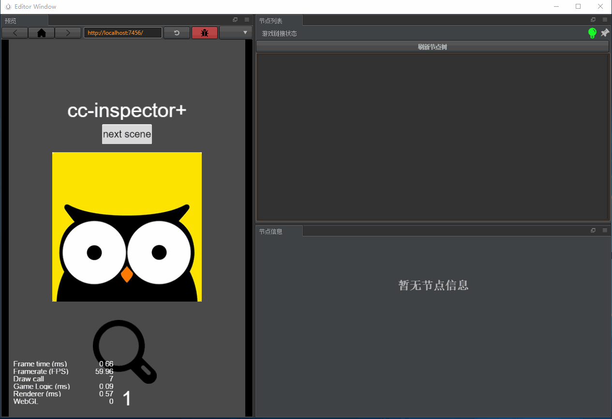

cc-inspector+
从cc-inspector第一个版本发布,到今天cc-inspector+的发布,经历的了将近一年的时间,在这一年的时间里面,creator也在飞速发展,论坛中也有不少开发者有类似unity那样运行时查看节点树的需求,作者本人也是一名普通的开发者,当然也少不了这样的需求,这个插件的发布,对开发者无疑是一个福利,算是送个大家的国庆节大礼包!
使用动态图
老版本

新版本

插件的核心功能,简单来说一句话: 查看游戏运行时节点树结构
围绕着核心功能,插件提供了预览游戏窗口,节点树列表窗口,节点信息窗口. 安装插件后第一件要做的事情,就是像像上图一样,拖拽好自己喜欢的布局,下面来具体说下各个窗口的功能:
游戏预览窗口
这个窗口是实时预览游戏的,核心技术也不瞒大家,其实就是嵌套了一个webview,加载 http://localhost:7456 ,所以,这就强大了,基本上是和chrome等浏览器环境里面运行游戏一模一样,当然你也可以在这个窗口调试游戏,唯一不同的是,需要点击下方的红色按钮打开DevTools,打开开发者工具,然后具体的debug操作,就真的和chrome一模一样了
如果想要更好玩一点,这个窗口你可以停靠在creator主界面中,有点类似unity的那个Game窗口,所有的开发流程,除了写代码,剩下的基本上在creator里面就能搞定.
节点列表窗口
这个窗口算是插件的主窗口,主要用来显示节点树,一个很赞的设计就是最右上边的小灯泡,这个小灯泡相当于一个指示灯,指示插件是否能够正常工作.
当打开插件后,小灯泡是灰色的,代表的意思插件目前没有检测到运行的游戏,此时是无法正常使用插件的相关功能,你可以点击红色按钮打开Web预览,选择使用插件默认的预览功能
当游戏运行启动的时候,小灯泡会立马变为闪烁的红灯,最后变为绿灯,表示插件已经可以正常使用了,接下来点击刷新节点树就会列出游戏当前状态的节点树状态,点击具体游戏节点,即可在节点信息中查看到该节点的详细信息,哈哈,没错,节点信息布局,完全模仿creator,有木有很亲切的感觉.
目前节点列表必须是手动刷新,在后续迭代版本中,自动刷新功能肯定是要加入进去的,真正的做到游戏节点树显示实时同步.
节点信息窗口
这个窗口就是想必就不用多做解释了吧,罗列节点的具体信息,美中不足的是,目前只支持显示node属性,对于组件信息,可能要稍微迭代几个版本才能加入.
另外有使用问我,在这里修改节点属性,能够影响到编辑器么,答案是,No!!!,这里仅仅是修改了运行时的属性,当游戏关闭后,你所做的所有修改都会丢失!
更多功能
- 局域网联机查看节点树: 没错,即使你游戏运行在手机上,同样可以查看节点树情况
已知问题
- 在V2.0.2以下版本中,打包之后,游戏中会保留插件代码,会影响游戏的运行,下个版本将重点优化这个问题,目前给出的解决方案是,打包前,移除该插件